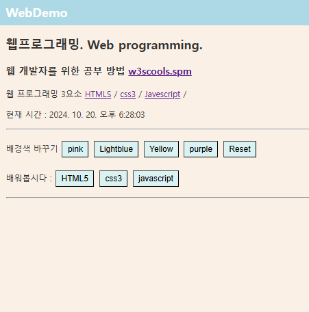
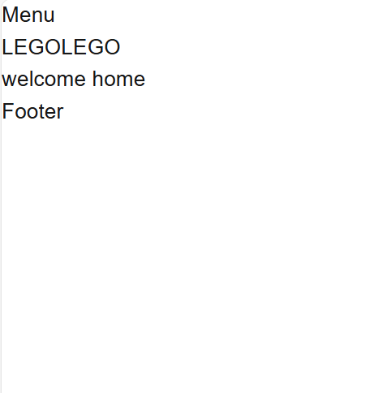

PORTFOLIO
sns 모방 웹페이지
작품 거래 웹페이지
예약 대행 웹페이지
뉴스 웹페이지
실제 sns와 비슷하게 모방하여 만들어보는 연습을 한다
개인의 창작물을 사고 파는 거래 사이트를 더 확장된 규모로 만들어서 개인의 저작권이 지켜지도록 하는 사이트
호텔 예약, 비행기 예약, 티켓팅 등의 예약 관련 서비스를 수월하게 처리할 수 있도록 합쳐둔 사이트
빅데이터에 따라 검증된 뉴스를 보아보고 뉴스를 보도할 수 있는 사이트

